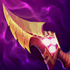

起手裝備
 增幅典籍
增幅典籍前期直接補魔攻，讓 1 技消耗與 3 技普攻都更有存在感。
Kayle · 後期成長／持續輸出型法系射手
凱爾前期先穩穩發育，不需要每波都硬換血。等到中後期裝備與等級起來後，就能站在後排用持續輸出慢慢融化對手，並用大絕保自己或保主力。
本站當時評級理由：凱爾在 ARAM 前期不算最強，但單線容易穩定吃經驗，等級提升後射程、範圍輸出與無敵大絕價值都會迅速放大，因此在長局很有威脅。
標準 ARAM 先以通用基準呈現；若官方後續補充凱爾專屬數值，會再同步更新。
前期直接補魔攻，讓 1 技消耗與 3 技普攻都更有存在感。

凱爾最重要的攻速法傷核心，能大幅提高持續輸出。
長團戰疊滿後收益很高，特別適合凱爾這種持續輸出角色。

補足大量 AP，讓普攻附加傷害與大絕輸出都更痛。

敵人進低血線後，能提高追擊與收頭效率。

敵方魔抗成形後維持後期輸出。

前期先補魔力、魔攻與法穿，讓過渡更平滑。

升級三級鞋後補更多 AP 與法穿，提高中後期火力。

凱爾很容易在長團戰疊滿，顯著放大普攻型輸出。

提高普攻對英雄的額外傷害，強化前期換血。

對低血量目標增傷，強化收尾能力。

更多攻速就是更快進入凱爾的輸出節奏。

前期較脆，骨甲能提高被先手時的容錯。

無位移射手法師非常需要閃現保命。

搭配大絕能有效撐過最危險的一波爆發。
1 技 > 3 技 > 2 技
ARAM 開局三個基礎技能各點 1 級，之後主升 1 技、次升 3 技；大絕能點就點。
前期以穩定吃兵與遠距消耗為主，不需要過度硬換。把血線維持健康比追求一波打滿更重要。
納什之牙與峽谷製造者成形後，凱爾就能開始穩定參與每波團戰。盡量站在最安全的位置持續輸出。
後期凱爾是非常強的團戰核心。大絕可以保自己，也可以保己方最肥的前排或射手，關鍵是不要太早交。
 女妖面紗
女妖面紗需要更穩的保命空間時可以提早補。
通常固定核心第一件。
虛空之杖可比預設更早製作。
獨立歷史資料：7.2b 分類評級。7.3a 僅有部分增幅公告欄位校正，英雄分類適配與出裝未因此全面重評；不套用到標準 ARAM。
看遊戲卡片下方分類 → 點相同分類 → 看左側 S+／S／A。
納什之牙與高攻速玩法讓普攻連動成為最穩定的增幅方向。
攻速、射程與持續普攻效果都能直接放大凱爾後期團戰輸出。
其中有增加攻擊距離與大絕後持續普攻強化的高價值單卡。
大絕是團戰關鍵，技能冷卻與命中增幅也能補足一、三技能輸出。
凱爾需要持續維持普攻距離，跑速能改善追擊與撤退。
二技能具治療能力，部分治療增幅能增加團隊續航，但不是主要輸出方向。
7.2b ARAM S 第三批：凱爾依 7.2 版本鞋子／裝備系統與目前主流法傷持續輸出玩法整理。｜v93 7.2d 標準 ARAM 全量校正：已複核 Tier、標準 ARAM 模式修正、7.2c／7.2d 英雄與道具、現行符文名稱及雪球戰車；無額外異動者沿用已驗證配置。